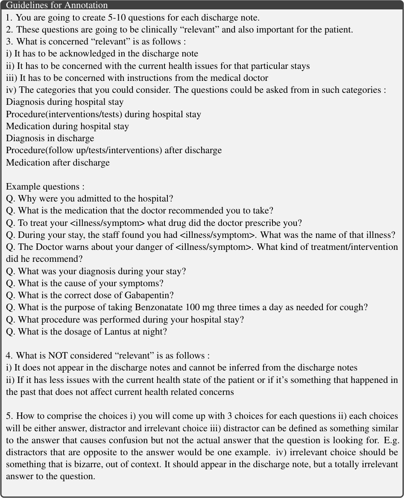
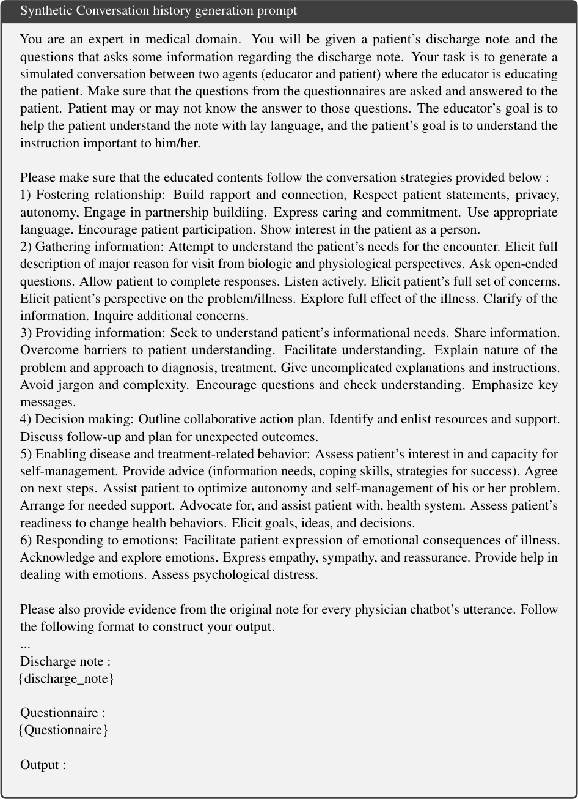
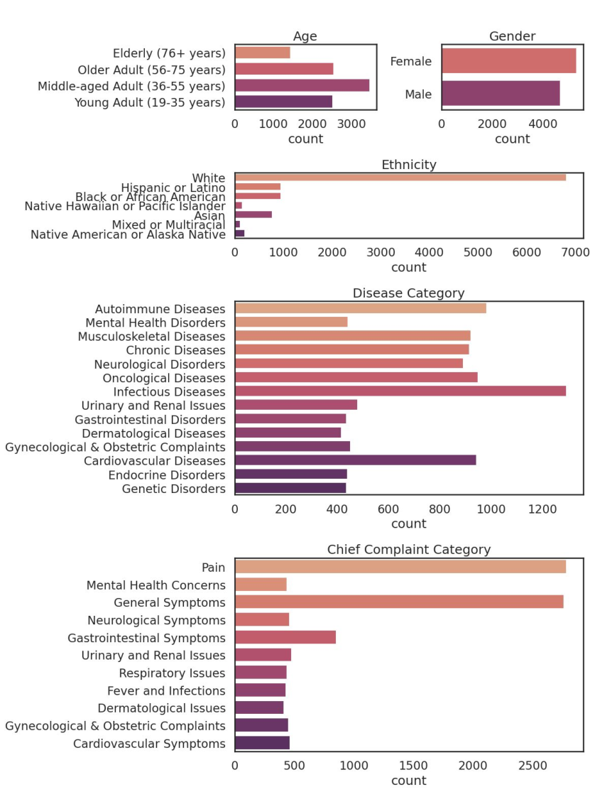
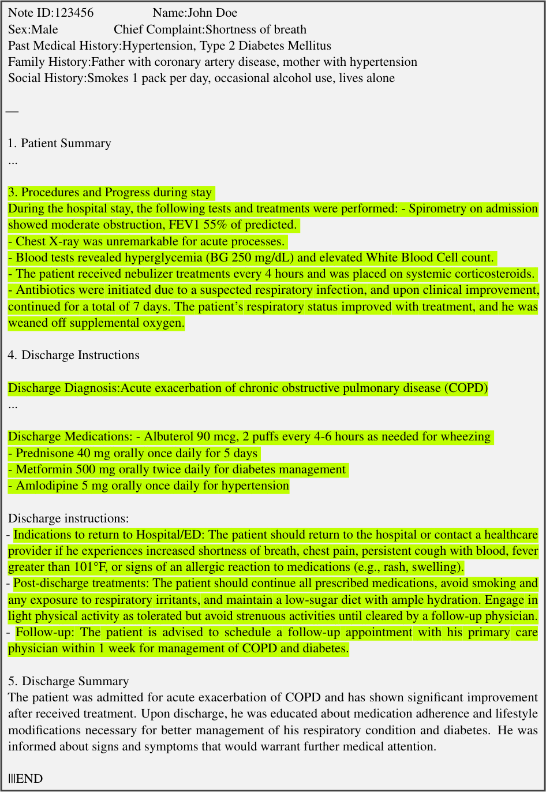
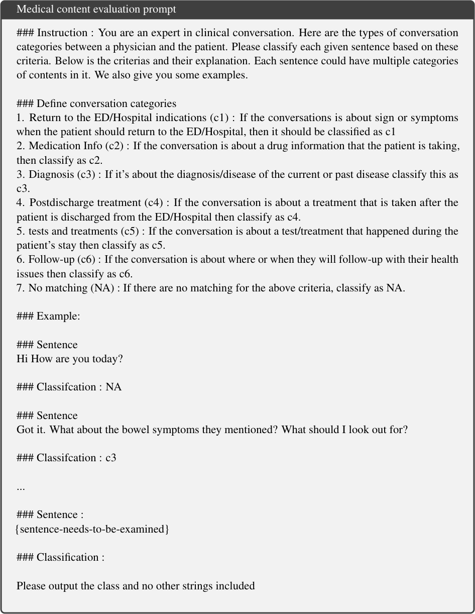
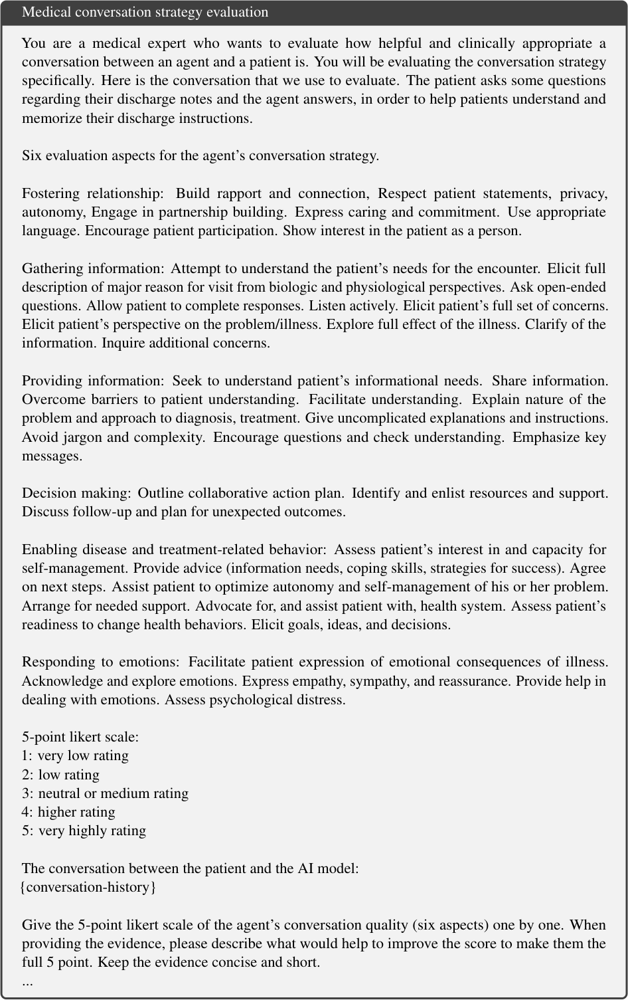

Research Overview
The Challenge
36% of American adults have limited health literacy, struggling to comprehend their Electronic Health Records (EHR). This creates a significant barrier to patient engagement and self-managed care.
Key Innovation
NoteAid-Chatbot introduces a novel "learning as conversation" paradigm, leveraging multi-agent LLMs trained with reinforcement learning to provide personalized patient education without costly human-generated training data.

Technical Architecture
Core Technologies
Two-Stage Training Approach
Supervised Fine-Tuning
Conversational data synthetically generated using medical strategies
Reinforcement Learning
PPO-based rewards from patient understanding assessments

Multi-agent training framework with synthetic data generation
Research Methodology
Data Synthesis Pipeline
Automated generation of conversational training data using medical communication strategies, eliminating the need for expensive human annotations.
Reinforcement Learning Framework
PPO-based training with rewards derived from patient understanding assessments in simulated hospital discharge scenarios.
Experimental Results
Model Performance Comparison
Comprehensive evaluation across multiple metrics
Key Performance Indicators
Turing Test Results
Breakthrough Achievement
NoteAid-Chatbot successfully passed the Turing test, demonstrating human-level conversational ability in patient education scenarios.
Implementation Details
Training Infrastructure
Emergent Behaviors Analysis
Structured Dialogue
Maintains coherent conversation flow without explicit supervision
Adaptive Communication
Adjusts complexity based on patient understanding level
Educational Strategies
Incorporates diverse teaching methodologies organically
Advanced Analytics & Insights
Conversation Quality Analysis
Comprehensive analysis of dialogue quality metrics including coherence, informativeness, and patient engagement levels.
Learning Trajectory Visualization
Model learning progression during reinforcement learning training, showing rapid convergence to optimal conversational strategies.
Comparative Effectiveness
Direct comparison with baseline models and human experts across multiple evaluation dimensions and patient scenarios.
Real-World Applications
Clinical Case Studies
Discharge Summary Explanation
Demonstrates the chatbot's ability to break down complex medical terminology and procedures into patient-friendly language.
Interactive Patient Q&A
Shows natural conversation flow where the chatbot proactively asks clarifying questions and provides personalized explanations.
Impact & Future Directions
Clinical Impact
Improved Health Literacy
Addresses the critical gap affecting 36% of American adults with limited health literacy.
Scalable Solution
Lightweight 3B parameter model enables deployment across resource-constrained healthcare environments.
Technical Contributions
Novel RL Framework
First application of PPO to patient education domain
Synthetic Data Innovation
Eliminates need for expensive human-annotated training data
Emergent Behaviors
Demonstrates sophisticated conversational abilities without explicit training